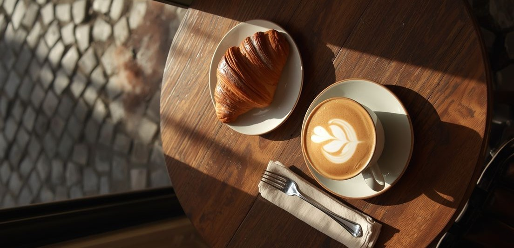
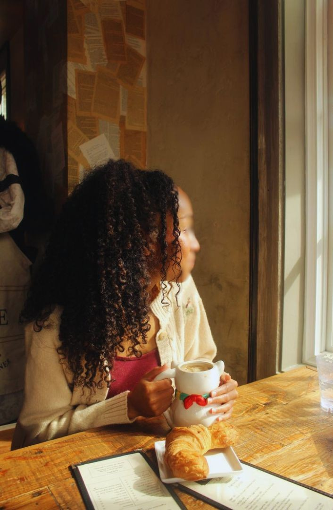
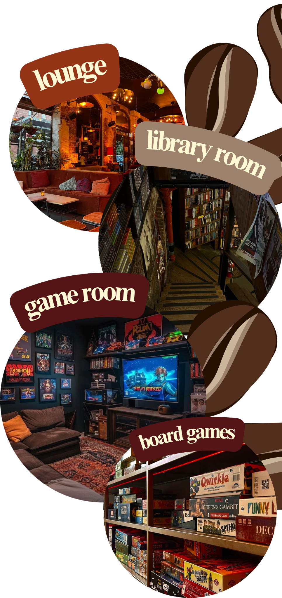
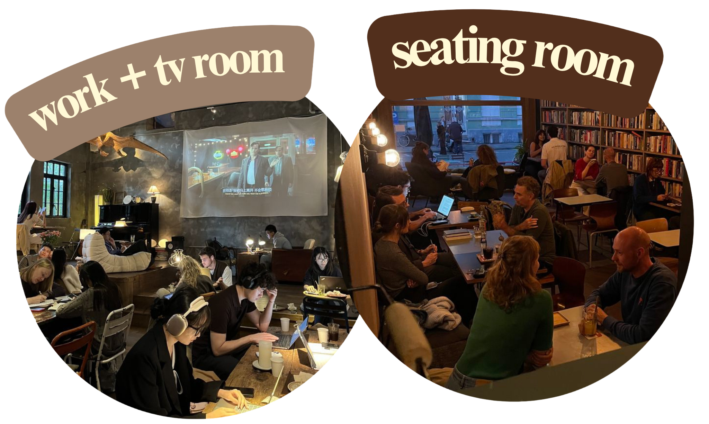

Welcome to our café’s site, we hope you’ve had a chance to look around and get a feel for what we’re about.
Coffee Fean’s was founded by Fatima Elsheikh and her family, built from a shared love of coffee and a strong sense of community. As a Black-owned business, creating a welcoming and inclusive space has always been at the center of everything we do.
What started as a small idea turned into something we’re really proud of. We wanted a place where people could come in, slow down, and enjoy more than just a drink. Whether you're grabbing a quick coffee, catching up with friends, or just looking for a calm lounge to sit and think, Coffee Fean’s is here for that.
We care about the little details, from the way our drinks are made to the atmosphere of the space. Everything is meant to feel warm, comfortable, and real. No pressure, no rush, just good coffee and good energy.
At the end of the day, Coffee Fean’s is about people. It’s about connection, culture, and creating something that feels like it belongs to the community around it.
Thank you for supporting us and being part of our journey.

At Coffee Fean’s, the space is just as important as the coffee. Every corner is meant to feel warm, calm, and easy to settle into.
Our lounge area is soft and inviting, with comfortable seating and a relaxed atmosphere. It’s the kind of place where time slows down a bit. You can sit back, have a conversation, or just exist for a while without feeling rushed.
The library section is quieter, with a more peaceful energy. It’s perfect for reading, studying, or getting lost in your own thoughts. Surrounded by books and a calm setting, it’s a space that lets you focus while still feeling cozy.
If you’re in the mood for something more lively, the game area brings a different kind of energy. Whether it’s a game of pool, board games with friends, or playing on the Nintendo, it adds a fun and nostalgic feel to the café.
Our main seating area is the heart of the café. With soft lighting and cozy 2 to 4 person tables, it’s perfect for catching up with friends, going on a casual date, or just sitting with your coffee for a while. It’s comfortable without feeling crowded, and there’s always a spot that feels just right.
We also have a TV and work section for when you want a different kind of vibe. You can sit back and watch something in a relaxed setting, or bring your laptop and get work done without feeling out of place. It’s a space that balances focus and comfort, so you can stay productive while still enjoying the atmosphere.
Every part of Coffee Fean’s was created with intention. It’s a place where you can choose your mood, find your corner, and feel at home.
